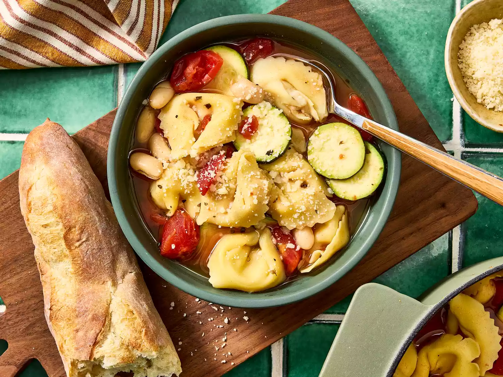

Simple Tortellini Soup
I got this tortellini soup recipe from my new sister-in-law. My husband asks for this every time he gets the sniffles. Very simple to make!

Prep Time: 10 mins
Cook Time: 15 mins
Total Time: 25 mins
Servings: 8
Ingredients
- 2 (14.5 ounce) cans chicken broth
- 1 (16 ounce) package cheese tortellini
- 1 (14.5 ounce) can Italian-style diced tomatoes
- 1 (15.5 ounce) can cannellini beans, rinsed and drained
- 1/2 zucchini, sliced
- 1 tablespoon red wine vinaigrette
- 1 teaspoon basil
- Ground black pepper to taste
- 1/4 cup grated Parmesan cheese, or to taste